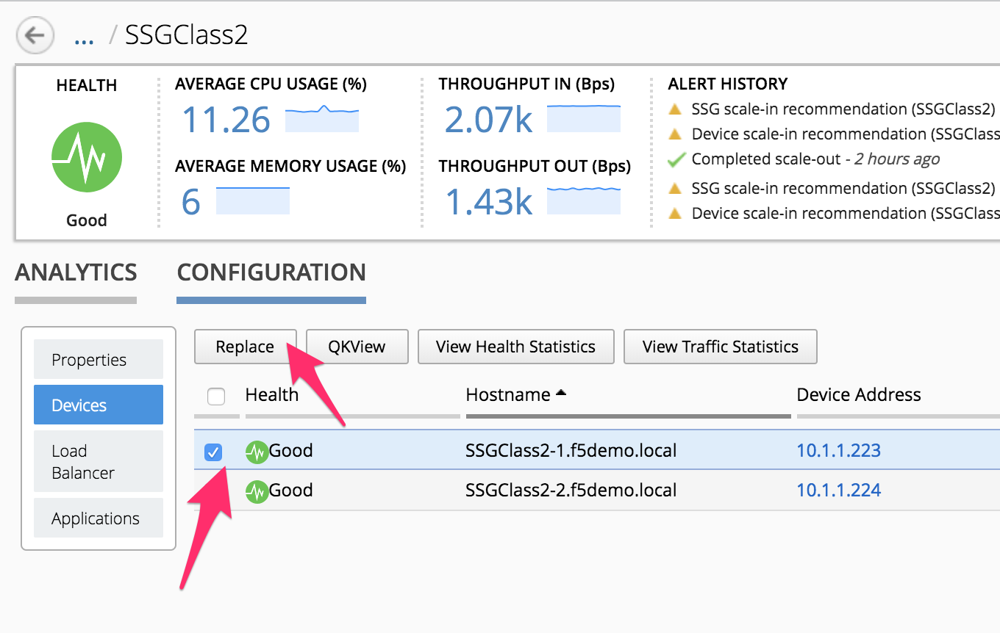
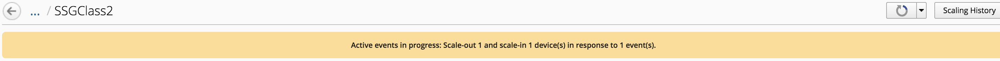

F5 BIG-IQ & Cloud Edition Lab > Class 2: BIG-IQ Deployment with auto-scale on AWS, Azure & VMware (Cloud Edition) > Module 3: Upgrade - Scaling up a SSG (VMWare) Source | Edit on
Lab 3.2: Upgrade and scale-up our SSG¶
In the previous lab, we have updated our Cloud Environment. We can now replace
the instances running in our SSG SSGClass2.
In the BIG-IQ UI, go to Applications > Environments > Service Scaling Groups and
click on your SSG SSGClass2.
Click on the Configuration tab, and then Devices. This is where you can review
the SSG devices that has been deployed.

Warning
we recommend to change one device at a time for such process
Select the device called SSGClass2-1.f5demo.local and click on the Replace button.
{kind=link}
As soon as you do this, you’ll trigger the replacement of this device by another using our updated Cloud Environment. You’ll see a yellow alert at the top that will look like this
{kind=link}
Note
the replacement process is not restricted by the Maximum Devices(s) Required
limit you have defined in your SSG. It you were already at the maximum capacity of your
SSG the replacement would still happen
You can monitor the deployment of the new instance :
via the log files orchestrator.log and restjavad.0.log on
BIG-IQvia the alerts available in the
BIG-IQUImonitor the vCenter interface (here you can also check that it has 4 vCPUs instead of 2)

After some time, you’ll see the new device being discovered by BIG-IQ:
{kind=link}
Note
During this process, you’re still able to deploy applications on top of this
SSG
The device will be fully discovered:

Here BIG-IQ will push the applications on this SSG device. Once it’s done, it will
remove the device SSGClass2-1.f5demo.local and the yellow banner at the top will
disappear

This is the process to do on each device that needs to be replaced. We would need to repeat
this task on SSGClass2-2.f5demo.local to finalize our upgrade/scale-up of our SSG.
This won’t be needed for this lab.
As you have seen, the upgrade and scale-up process are identical and can be done at the same time if needed